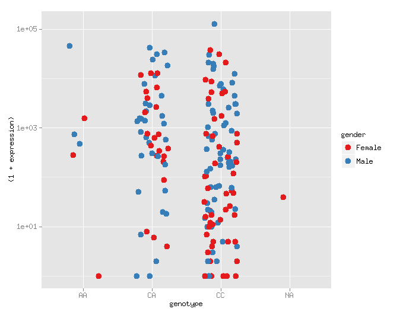

Important
Within your VirtualBox, Google Search for "rstudio desktop download" and Follow the first link.
Download the recommended for your system (Ubuntu 10+, 32-bit)
$ sudo dpkg -i ~/Downloads/rstudio*.deb
$ sudo apt-get -f install
Important
Within your VirtualBox, Google Search for "rstudio desktop download" and Follow the first link.
Download the recommended for your system (Ubuntu 10+, 32-bit)
$ sudo dpkg -i ~/Downloads/rstudio*.deb
$ sudo apt-get -f install
- Remember Python
- Startup RStudio
- Learn to navigate in RStudio
- load the ggplot2 library
- Learn to load external data
We will learn R, but remember key python concepts.
def parse_bed(fname):
for line in open(fname):
fields = line.rstrip().split("\t")
yield dict(chrom=fields[0], start=int(fields[1]),
end=int(fields[2]), value=float(fields[4]))
Download the data.
Download Link: expr-geno-covs.txt
cd /opt/bio-workshop/data/
wget https://ucd-bioworkshop.github.io/_downloads/expr-geno-covs.txt
RStudio is a useful interface for R, encapsulates the R prompt, data views and plotting in a single User Interface.
$ rstudio
df is short for data frame, the basic R data structure <- is the R assignment operator, can also use =
> df <- read.delim('expr-geno-covs.txt')
> summary(df)
> head(df)
> head(df$expression)
The most common ways to read in data in R are:
read.csv('some.csv')
read.delim('some.tab.txt')
These take common arguments. You can get help on a function in R with:
?read.delim
?head
In python, we can write
print "hello world"
In R, we must write
print("hello world")
in python, we did:
import pybedtools
In R, it is:
library(ggplot2)
# or
library('ggplot2')
get/set working directory
getwd() # print
setwd('C:\whatever\path\') # on windows
setwd('/opt/bio-workshop/data/') # on linux
We will learn to use it to create plots like this
library(ggplot2)
df = read.delim('expr-geno-covs.txt')
ggplot(df, aes(x=genotype, y=expression)) +
geom_point()
- aes() stands for aesthetics, means pull the coordiantes/colors/size/etc
from these columns in the data.frame.
aes(x=genotype, y=expression, color=gender)
+ geom_point() means plot these as points, could be geom_line() or
a number of other geom_ things.
Use google to find how to change the y-scale on this plot to log10
library(ggplot2)
df = read.delim('expr-geno-covs.txt')
ggplot(df, aes(x=genotype, y=expression)) +
geom_point()
library(ggplot2)
df = read.delim('expr-geno-covs.txt')
ggplot(df, aes(x=genotype, y=expression)) +
geom_point() +
scale_y_log10()
You can find a lot of info for ggplot2 with some googling.
The ggplot2 docs are very good: http://docs.ggplot2.org/current/
Look at the geom_point() documentation and change the color of the plot above so that males and females are color'ed differently.
As you've seen, in a data.frame, we read everything into memory
- R figures out if it is int/character/numeric
- each column of the data.frame is accessed by $ e.g df$genotype
One of the simplest things to do in R, without ggplot is to look at a histogram of your data:
df = read.delim('expr-geno-covs.txt')
hist(df$expression)
# or
hist(log(df$expression))
You can make these look a lot nicer with ggplot2.
Hist does not work with ggplot, you'll have to use the ggplot2 machinery for that.
Make a histogram using ggplot and separate cases from controls either by facet or by fill.